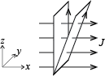

Figuren viser to forskjellige Ampere-sløyfer A og B. Sløyfe A går gjennom punktene \( (0,0,0) \), \( (0,a,0) \), \( (0,a,2a) \) og \( (0,0,2a) \). Sløyfe B går gjennom punktene \( (0,0,0) \), \( (0,a,0) \), \( (a,a,2a) \), \( (a,0,2a) \). Det er en uniform strømtetthet \( \vec{J} = J_0\x \) overalt i rommet.

a) Hva er netto strøm gjennom sløyfe A? Sjekk ekstra nøye fortegnet til strømmen - hva er det som bestemmer dette fortegnet?
\( I = 2 J_0 a^2 \). Fortegnet er positivt.
b) Hva er netto strøm gjennom sløyfe B?
c) Kan du på bakgrunn av dette lage deg en lur regel for hvordan du finner netto strøm gjennom en sløyfe?
For en plan flate er det tverrsnittarealet - arealet normalt på strømtettheten - som inngår i $$I = \vec{J} \cdot \vec{S} = J S_{\text{tverrsnitt}}$$